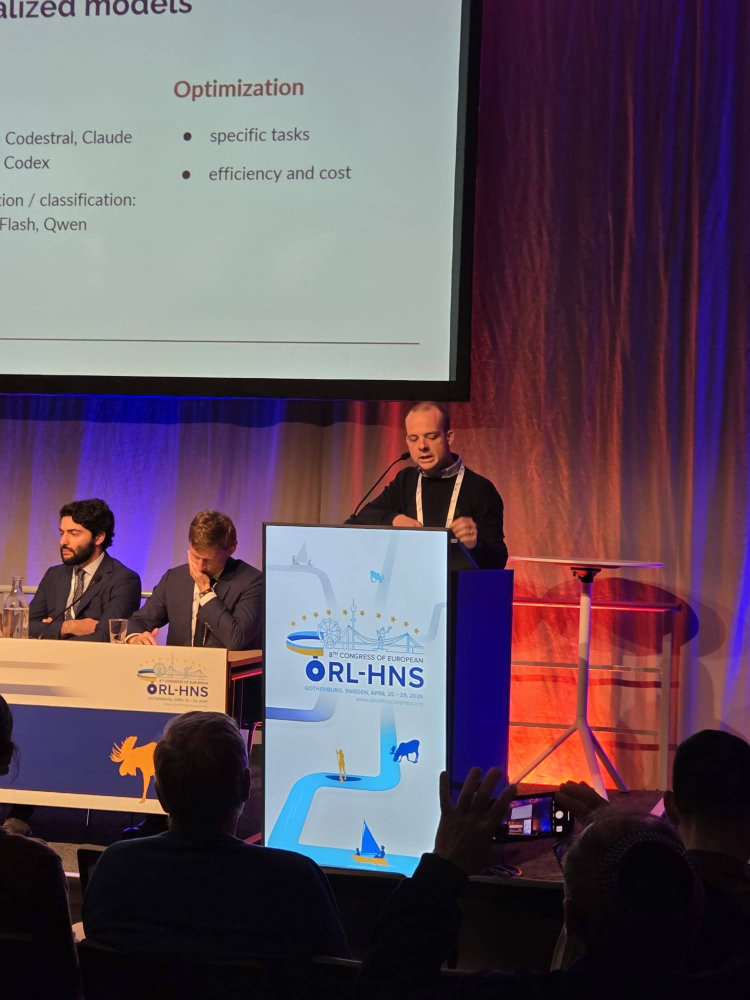

Sinusite odontogena
Studio della diagnosi e del trattamento delle sinusiti odontogene e delle complicanze otorinolaringoiatriche correlate a patologie o trattamenti odontoiatrici del mascellare superiore.
Ricerca, didattica e divulgazione in otorinolaringoiatria
La mia attività scientifica si sviluppa nell’ambito dell’otorinolaringoiatria, con particolare attenzione alla patologia naso-sinusale, alla sinusite odontogena, alle patologie di confine tra otorinolaringoiatria e odontoiatria, alla patologia orale infiammatoria e autoimmune, alla laringologia e alle applicazioni dell’intelligenza artificiale in medicina.
Svolgo attività di ricerca presso il Dipartimento di Scienze della Salute dell’Università degli Studi di Milano e presso l’Unità di Otorinolaringoiatria dell’Ospedale San Paolo di Milano, con una produzione scientifica orientata sia alla pratica clinica sia alla collaborazione multidisciplinare.

Studio della diagnosi e del trattamento delle sinusiti odontogene e delle complicanze otorinolaringoiatriche correlate a patologie o trattamenti odontoiatrici del mascellare superiore.
Interesse clinico e scientifico per le patologie infiammatorie, autoimmuni e potenzialmente preneoplastiche del cavo orale, incluse lichen planus orale e manifestazioni orali della graft-versus-host disease.
Ricerca sull’utilizzo dell’intelligenza artificiale generativa in otorinolaringoiatria, nella documentazione clinica, nella comunicazione medico-paziente e nel supporto a compiti clinici strutturati.
Sono autore o coautore di più di 170 pubblicazioni scientifiche indicizzate in ambito otorinolaringoiatrico e medico. Ho inoltre partecipato a oltre 100 contributi congressuali, tra comunicazioni orali, poster e video scientifici, in congressi nazionali e internazionali.
Gli interventi e i contributi scientifici riguardano soprattutto la patologia naso-sinusale, con particolare attenzione alla sinusite odontogena, la patologia orale, la chirurgia endoscopica, la laringologia, la chirurgia testa-collo e, negli ultimi anni, l’applicazione dell’intelligenza artificiale alla pratica clinica otorinolaringoiatrica.
Sono docente presso la Facoltà di Medicina e Chirurgia dell’Università degli Studi di Milano. Svolgo attività didattica nei corsi di laurea magistrale in Medicina e Chirurgia del Polo San Paolo e nel corso internazionale in lingua inglese International Medical School.
Partecipo inoltre alla didattica nei corsi di laurea delle professioni sanitarie, in particolare nel Corso di Laurea in Logopedia e nel Corso di Laurea in Tecniche Audioprotesiche.
L’attività didattica comprende lezioni frontali, attività professionalizzanti, formazione clinica e tutoraggio di studenti e specializzandi.
Per consultare il profilo istituzionale, il profilo scientifico e l’elenco aggiornato delle pubblicazioni, sono disponibili i seguenti collegamenti:
Le informazioni presenti in questa pagina hanno finalità informative e riassumono l’attività scientifica, didattica e accademica del Prof. Alberto Saibene. Per l’elenco completo e aggiornato delle pubblicazioni si rimanda ai profili scientifici collegati.